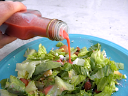
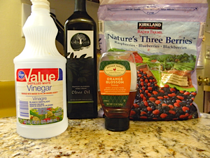
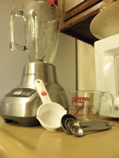
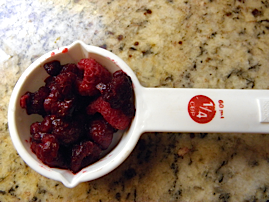
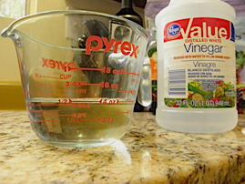
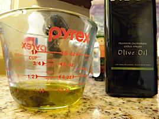
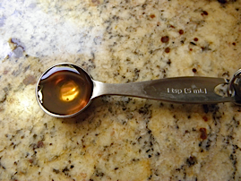
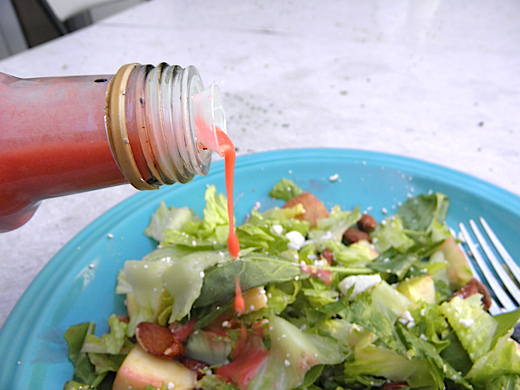

8-31-2012
Raspberry Vinaigrette
Recipe featured from Wellness Mama.
Welcome to my first featured recipe. This one comes courtesy of a wonderful healthy food and healthy living site called Wellness Mama. This recipe for raspberry vinaigrette is so refreshing and pairs perfectly with a salad topped with feta cheese and fuji apple slices. Not only is it delicious but the pink color adds a pop to the salad. I would recommend making this dressing for a summer party or, for even more cuteness, a baby girl baby shower. Click here for a tutorial on how to make this super cute and versatile salad dressing bottle.
Ingredients:
- 1/2 cup White Vinegar
- 1/4 cup Olive Oil
- 1/4 cup fresh or frozen Raspberries
- 2 teaspoons Honey
Supplies:
- Blender
- Dry Measuring Cup
- Measuring Spoons
- Liquid Measuring Cup
Directions:
- If using a mixed bag of frozen fruit, pick out the raspberries. Measure out 1/4 cup of the frozen or fresh raspberries. Put the 1/4 cup of raspberries into the blender. 
- Using your liquid measuring cup, measure out 1/2 cup white vinegar and pour it into the blender. Rinse the liquid measuring cup, use it to measure out 1/4 cup olive oil, and pour it into the blender. 
- Using the measuring spoons, measuring out 2 teaspoons of honey and add them to the blender. 
- Using a medium setting on the blender mix the raspberries, olive oil, and vinegar until fully combined. Pour into a salad bottle and add to your salad. I used mine on a salad made with romaine and spinach, topped with feta cheese, fuji apple slices, and almonds. 
I hope you enjoy this recipe as much as I do…it really is Delicious! Click here for more great recipes!